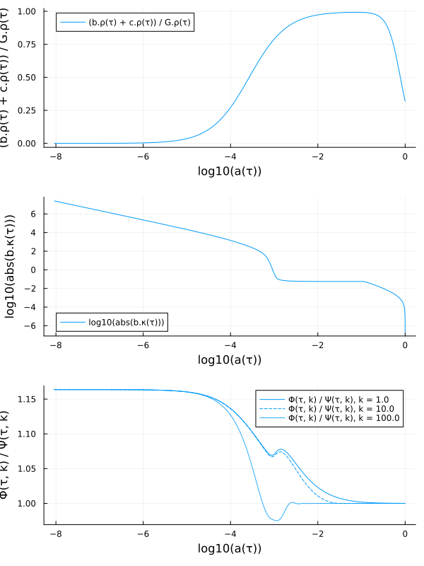

Solving models
First create a symbolic cosmological model:
using SymBoltz
M = ΛCDM()Creating the problem
Once the symbolic cosmological model M has been constructed, it can be turned into a numerical problem: For example:
pars = parameters_Planck18(M)
prob = CosmologyProblem(M, pars; jac = true, sparse = true)Cosmology problem for model ΛCDM
Timespan: from τ = 1.0e-6 till τ = 100.0 or a(τ) ~ 1
Stages:
Background 1: forwards, 4 unknowns (a(τ), b₊ΔT(τ), b₊rec₊XH⁺(τ), …), dense Jacobian
Background 2: backwards, 2 unknowns (χ(τ), b₊κ(τ)), dense Jacobian
Perturbations: 82 unknowns (Φ(τ, k), c₊δ(τ, k), c₊θ(τ, k), …), 93.9 % sparse Jacobian
Independent parameters:
γ₊T₀ => 2.7255
b₊Ω₀ => 0.0493678
h₊N => 3.0
c₊Ω₀ => 0.26447
b₊YHe => 0.2454
h₊m_eV => 0.02
I₊ln_As1e10 => 3.04405
I₊ns => 0.965
h => 0.6736
ν₊N => 0.046The keyword arguments generate a analytical and sparse Jacobian matrix, so solving large perturbation systems is efficient.
SymBoltz.CosmologyProblem — Type
CosmologyProblem(
M::System, pars::Dict, shoot_pars = Dict(), shoot_conditions = [];
ivspan = (1e-6, 100.0), terminate = M.a ~ 1,
bg = true, pt = true, spline = true, debug = false, fully_determined = true, jac = true, sparse = true,
bgopts = (), ptopts = (), iip = true, specialize = SciMLBase.AutoSpecialize,
kwargs...
)Create a numerical cosmological problem from the model M with parameters pars.
Optionally, the shooting method determines the parameters shoot_pars (mapped to initial guesses) such that the equations shoot_conditions are satisfied at the final time. Shooting parameters and conditions declared in M are included automatically, and guesses in shoot_pars override those in M.
The background is solved in stages given by the Tuple bg of variable vectors, each interpolating previous stages with splines. If bg = true, the stages are detected from the dependencies between background variables with SymBoltz.split_stages. Stages with variables declared with [backwards = true] (like χ and κ) are integrated backwards from today, and other stages forwards. Each option in bgopts is a single value for all stages, or a Tuple with one value per stage.
The first stage is integrated over ivspan, and later stages over the span of the previous stage. The first forwards stage terminates at the event terminate (default today when $a = 1$); pass terminate = nothing to integrate over all of ivspan.
If pt = false, or if M has no wavenumber parameter k, the perturbations are not created. The options bgopts and ptopts are passed to the ODEProblem constructors of the background stages and perturbations, and kwargs are passed to all of them.
If spline is a Bool, it decides whether all background unknowns in the perturbations system are replaced by splines. If spline is a Vector, it rather decides which (unknown and observed) variables are splined.
If jac, analytic functions are generated for the ODE Jacobians; otherwise it is computed with forward-mode automatic differentiation by default. If sparse, the perturbations ODE uses a sparse Jacobian matrix that is usually more efficient; otherwise a dense matrix is used. The smaller background stages always use dense matrices, unless they are requested sparse with e.g. bgopts = (sparse = true,).
If fully_determined, the initialization system of every stage must have as many equations as unknowns. If debug, the system of every stage is wrapped with ModelingToolkit.debug_system to help locate errors in the equations.
The SciMLBase type parameters iip and specialize are forwarded to internal ODEProblem{iip, specialize}(...) constructors.
Updating the parameters
Constructing a CosmologyProblem is an expensive operation that compiles all the symbolics down to numerics. It is not necessary to repeat this just to update parameter values. To do so, use remake to create a new problem with updated parameter values:
prob = remake(prob, [M.g.h => 0.70, M.c.Ω₀ => 0.27]) # create updated problemCosmology problem for model ΛCDM
Timespan: from τ = 1.0e-6 till τ = 100.0 or a(τ) ~ 1
Stages:
Background 1: forwards, 4 unknowns (a(τ), b₊ΔT(τ), b₊rec₊XH⁺(τ), …), dense Jacobian
Background 2: backwards, 2 unknowns (χ(τ), b₊κ(τ)), dense Jacobian
Perturbations: 82 unknowns (Φ(τ, k), c₊δ(τ, k), c₊θ(τ, k), …), 93.9 % sparse Jacobian
Independent parameters:
γ₊T₀ => 2.7255
b₊Ω₀ => 0.0493678
h₊N => 3.0
c₊Ω₀ => 0.27
b₊YHe => 0.2454
h₊m_eV => 0.02
I₊ln_As1e10 => 3.04405
I₊ns => 0.965
h => 0.7
ν₊N => 0.046To update the same parameters many times (e.g. in a loop), remake_function returns a function that does this more efficiently:
probf = remake_function(prob, [M.g.h, M.c.Ω₀]) # fast factory function
prob = probf([0.70, 0.27]) # create updated problemCosmology problem for model ΛCDM
Timespan: from τ = 1.0e-6 till τ = 100.0 or a(τ) ~ 1
Stages:
Background 1: forwards, 4 unknowns (a(τ), b₊ΔT(τ), b₊rec₊XH⁺(τ), …), dense Jacobian
Background 2: backwards, 2 unknowns (χ(τ), b₊κ(τ)), dense Jacobian
Perturbations: 82 unknowns (Φ(τ, k), c₊δ(τ, k), c₊θ(τ, k), …), 93.9 % sparse Jacobian
Independent parameters:
γ₊T₀ => 2.7255
b₊Ω₀ => 0.0493678
h₊N => 3.0
c₊Ω₀ => 0.27
b₊YHe => 0.2454
h₊m_eV => 0.02
I₊ln_As1e10 => 3.04405
I₊ns => 0.965
h => 0.7
ν₊N => 0.046SciMLBase.remake — Method
remake(prob::CosmologyProblem, pars; kwargs...)Return a new problem with updated independent parameter values pars (a Dict, pair or vector of pairs in the form par => val). Unspecified parameters keep their values in prob.
For repeated updates, prefer remake_function instead.
Examples
newprob = remake(prob, M.c.Ω₀ => 0.3)
newprob = remake(prob, [M.c.Ω₀ => 0.3, M.g.h => 0.7])
newprob = remake(prob, Dict(M.c.Ω₀ => 0.3, M.g.h => 0.7))SymBoltz.remake_function — Function
remake_function(prob::CosmologyProblem, pars; kwargs...)Create an efficient function f for updating the values of the independent parameters pars in prob. It is called like newprob = f(vals), where vals are the new numerical values in the same order as in pars. The symbolic parameters pars can be a single parameter or a vector or tuple of parameters.
Examples
probf = remake_function(prob, M.c.Ω₀)
newprob = probf(0.3)
probf = remake_function(prob, [M.c.Ω₀, M.g.h])
newprob = probf([0.3, 0.7])Solving the problem
The (updated) problem can now be solved for some wavenumbers:
ks = 10 .^ range(-2, +4, length=100)
sol = solve(prob, ks)Cosmology solution for model ΛCDM
Stages:
Background 1: return code Terminated; solved with Rodas5P; 746 points
Background 2: return code Success; solved with Rodas5P; 249 points
Perturbations: return codes Success; solved with Rodas5P; 130-4635 points; x100 k ∈ [0.010000000000000002, 10000.0] H₀/c (interpolation in-between)CommonSolve.solve — Method
CommonSolve.solve(args...; kwargs...) -> solutionSolve an equation or other mathematical problem using the algorithm specified in the arguments. Generally, downstream packages extend:
CommonSolve.solve(prob::ProblemType, alg::SolverType; kwargs...)::SolutionTypeIf a package only defines the iterator interface, solve falls back to:
solve(args...; kwargs...) = solve!(init(args...; kwargs...))Arguments
args...: Problem, algorithm, and implementation-specific positional arguments.
Keywords
kwargs...: Implementation-specific solver options.
Interface
Extensions must dispatch the first positional argument on a type that they own. This prevents type piracy and ambiguities between independently developed solver packages.
Returns
The solution object defined by the downstream solver implementation.
Examples
struct MyProblem end
struct MyAlg end
CommonSolve.solve(::MyProblem, ::MyAlg; kwargs...) = :solution
CommonSolve.solve(MyProblem(), MyAlg())solve(
prob::CosmologyProblem, ks::Union{Nothing, AbstractArray} = nothing;
bgopts = (alg = bgalg(prob), reltol = 1e-7, abstol = 1e-7), bgextraopts = (),
ptopts = (alg = ptalg(prob), reltol = 1e-5, abstol = 1e-5), ptivini = -Inf, ptextraopts = (),
shootopts = (alg = shootalg(prob), abstol = 1e-5),
thread = true, verbose = false, kwargs...
)Solve the cosmological problem prob up to the perturbative level with wavenumbers ks in units of $H₀/c$ (or only to the background level if it is empty). The options bgopts and ptopts are passed to the background stages and perturbations ODE solve() calls, and shootopts to the shooting method nonlinear solve(). Each option in bgopts can be a single value for all background stages, or a Tuple with one value per stage. If threads, integration over independent perturbation modes are parallellized.
Accessing the solution
The returned solution sol can be conveniently accessed to obtain any variable y of the model M:
sol(y, τ)returns the background variable(s) $y(τ)$ as a function of conformal time(s) $τ$. It interpolates between time points using the ODE solver's custom-tailored interpolator.sol(y, τ, k)returns the perturbation variable(s) $y(τ,k)$ as a function of the wavenumber(s) $k$ and conformal time(s) $τ$. It also interpolates linearly between the logarithms of the wavenumbers passed tosolve.
Note that y can be any symbolic variables in the model M, and even expressions thereof. Unknown variables are part of the state vector integrated by the ODE solver, and are returned directly from its solution. Observed variables or expressions are functions of the unknowns, and are automatically calculated from the equations that define them in the symbolic model. For example:
τs = sol[M.τ] # get time points used in the background solution
ks = [1e0, 1e1, 1e2, 1e3] # wavenumbers
as = sol(M.g.a, τs) # scale factors
Ωms = sol((M.b.ρ + M.c.ρ) / M.G.ρ, τs) # matter-to-total density ratios
κs = sol(M.b.κ, τs) # optical depths
Φs = sol(M.g.Φ, τs, ks) # metric potentials
Φs_over_Ψs = sol(M.g.Φ / M.g.Ψ, τs, ks) # ratio between metric potentialsPlotting the solution
SymBoltz.jl includes plot recipes for easily visualizing the solution. It works similarly to the solution accessing: call plot(sol, [wavenumber(s),] x_expr, y_expr) to plot y_expr as a function of x_expr. For example, to plot some of the same quantities that we obtained above:
using Plots
p1 = plot(sol, log10(M.g.a), (M.b.ρ + M.c.ρ) / M.G.ρ)
p2 = plot(sol, log10(M.g.a), log10(abs(M.b.κ)))
p3 = plot(sol, log10(M.g.a), M.g.Φ / M.g.Ψ, ks[1:3]) # exclude last k, where Φ and Ψ cross 0
plot(p1, p2, p3, layout=(3, 1), size=(600, 800))
More examples are shown on the models page.
Shooting method
Some problems require tuning parameters or initial conditions to satisfy constraints at a later time. This is handled by the shooting method, which uses a rootfinder to repeatedly solve the background for different parameters to find the values that satisfies the constraints. As a trivial example, we can construct a model where the continuity equation for the cosmological constant is integrated numerically and not analytically:
g = SymBoltz.metric()
Λ = SymBoltz.cosmological_constant(g; analytical = false)
M = ΛCDM(; g, Λ)
equations(background(M.Λ))\[ \begin{align*} \frac{\mathrm{d} ~ \rho\left( \tau \right)}{\mathrm{d}\tau} &= - 3 ~ \left( P\left( \tau \right) + \rho\left( \tau \right) \right) ~ \mathscr{H}\left( \tau \right) \\ \Omega\left( \tau \right) &= 8.3776 ~ \rho\left( \tau \right) \\ w\left( \tau \right) &= -1 \\ P\left( \tau \right) &= w\left( \tau \right) ~ \rho\left( \tau \right) \\ \mathtt{c_s^2}\left( \tau \right) &= w\left( \tau \right) \end{align*} \]
We specify to shoot for $\rho_\Lambda(\tau_\text{ini})$ and give an initial guess that is used as the starting point in Newton's method. We also specify that the constraint $H/H₀ = 1$ (in code units) must hold today:
shoot = Dict(M.Λ.ρᵢ => 0.0)
conditions = [M.g.H ~ 1]
prob = CosmologyProblem(M, pars, shoot, conditions)
sol = solve(prob; verbose = true)┌ Warning: Verbosity toggle: dt_epsilon
│ Initial timestep too small (near machine epsilon), using default: dt = 1.0e-6
└ @ OrdinaryDiffEqCore ~/.julia/packages/OrdinaryDiffEqCore/ynHO8/src/initdt.jl:222
Shooting: Λ₊ρᵢ = 0.0 -> -1 + H(τ) = -0.4384844352185979
┌ Warning: Verbosity toggle: dt_epsilon
│ Initial timestep too small (near machine epsilon), using default: dt = 1.0e-6
└ @ OrdinaryDiffEqCore ~/.julia/packages/OrdinaryDiffEqCore/ynHO8/src/initdt.jl:222
Shooting: Λ₊ρᵢ = 0.058779701285121985 -> -1 + H(τ) = -0.10126121511389374
┌ Warning: Verbosity toggle: dt_epsilon
│ Initial timestep too small (near machine epsilon), using default: dt = 1.0e-6
└ @ OrdinaryDiffEqCore ~/.julia/packages/OrdinaryDiffEqCore/ynHO8/src/initdt.jl:222
Shooting: Λ₊ρᵢ = 0.08050611341447049 -> -1 + H(τ) = -0.005140126407899959
┌ Warning: Verbosity toggle: dt_epsilon
│ Initial timestep too small (near machine epsilon), using default: dt = 1.0e-6
└ @ OrdinaryDiffEqCore ~/.julia/packages/OrdinaryDiffEqCore/ynHO8/src/initdt.jl:222
Shooting: Λ₊ρᵢ = 0.08172692069040088 -> -1 + H(τ) = -1.3210486064507698e-5
┌ Warning: Verbosity toggle: dt_epsilon
│ Initial timestep too small (near machine epsilon), using default: dt = 1.0e-6
└ @ OrdinaryDiffEqCore ~/.julia/packages/OrdinaryDiffEqCore/ynHO8/src/initdt.jl:222
Shooting: Λ₊ρᵢ = 0.08173007442000606 -> -1 + H(τ) = -8.712752741502072e-11
┌ Warning: Verbosity toggle: dt_epsilon
│ Initial timestep too small (near machine epsilon), using default: dt = 1.0e-6
└ @ OrdinaryDiffEqCore ~/.julia/packages/OrdinaryDiffEqCore/ynHO8/src/initdt.jl:222You can specify any number of shooting variables and conditions, but they must be equal in number to form a well-defined rootfinding problem. When there is only one shooting variable, we can also use bracketing rootfinders instead of Newton's method. To do this, replace the scalar guess with an interval:
shoot = Dict(M.Λ.ρᵢ => (0.0, 0.5))
prob = CosmologyProblem(M, pars, shoot, conditions)
sol = solve(prob; verbose = true)┌ Warning: Verbosity toggle: dt_epsilon
│ Initial timestep too small (near machine epsilon), using default: dt = 1.0e-6
└ @ OrdinaryDiffEqCore ~/.julia/packages/OrdinaryDiffEqCore/ynHO8/src/initdt.jl:222
Shooting: Λ₊ρᵢ = 0.0 -> -1 + H(τ) = -0.4384844352185979
┌ Warning: Verbosity toggle: dt_epsilon
│ Initial timestep too small (near machine epsilon), using default: dt = 1.0e-6
└ @ OrdinaryDiffEqCore ~/.julia/packages/OrdinaryDiffEqCore/ynHO8/src/initdt.jl:222
Shooting: Λ₊ρᵢ = 0.5 -> -1 + H(τ) = 1.1222841313731222
┌ Warning: Verbosity toggle: dt_epsilon
│ Initial timestep too small (near machine epsilon), using default: dt = 1.0e-6
└ @ OrdinaryDiffEqCore ~/.julia/packages/OrdinaryDiffEqCore/ynHO8/src/initdt.jl:222
Shooting: Λ₊ρᵢ = 0.25 -> -1 + H(τ) = 0.5523191784826251
┌ Warning: Verbosity toggle: dt_epsilon
│ Initial timestep too small (near machine epsilon), using default: dt = 1.0e-6
└ @ OrdinaryDiffEqCore ~/.julia/packages/OrdinaryDiffEqCore/ynHO8/src/initdt.jl:222
Shooting: Λ₊ρᵢ = 0.11063858396231661 -> -1 + H(τ) = 0.11453280034162905
┌ Warning: Verbosity toggle: dt_epsilon
│ Initial timestep too small (near machine epsilon), using default: dt = 1.0e-6
└ @ OrdinaryDiffEqCore ~/.julia/packages/OrdinaryDiffEqCore/ynHO8/src/initdt.jl:222
Shooting: Λ₊ρᵢ = 0.08321590318512721 -> -1 + H(τ) = 0.0062045765053961865
┌ Warning: Verbosity toggle: dt_epsilon
│ Initial timestep too small (near machine epsilon), using default: dt = 1.0e-6
└ @ OrdinaryDiffEqCore ~/.julia/packages/OrdinaryDiffEqCore/ynHO8/src/initdt.jl:222
Shooting: Λ₊ρᵢ = 0.08167434556701637 -> -1 + H(τ) = -0.0002334638133306699
┌ Warning: Verbosity toggle: dt_epsilon
│ Initial timestep too small (near machine epsilon), using default: dt = 1.0e-6
└ @ OrdinaryDiffEqCore ~/.julia/packages/OrdinaryDiffEqCore/ynHO8/src/initdt.jl:222
Shooting: Λ₊ρᵢ = 0.0817302473480205 -> -1 + H(τ) = 7.242717832145473e-7
┌ Warning: Verbosity toggle: dt_epsilon
│ Initial timestep too small (near machine epsilon), using default: dt = 1.0e-6
└ @ OrdinaryDiffEqCore ~/.julia/packages/OrdinaryDiffEqCore/ynHO8/src/initdt.jl:222
Shooting: Λ₊ρᵢ = 0.08173007446099 -> -1 + H(τ) = 8.454570377125492e-11
┌ Warning: Verbosity toggle: dt_epsilon
│ Initial timestep too small (near machine epsilon), using default: dt = 1.0e-6
└ @ OrdinaryDiffEqCore ~/.julia/packages/OrdinaryDiffEqCore/ynHO8/src/initdt.jl:222
Shooting: Λ₊ρᵢ = 0.0817300744408062 -> -1 + H(τ) = -2.220446049250313e-16
┌ Warning: Verbosity toggle: dt_epsilon
│ Initial timestep too small (near machine epsilon), using default: dt = 1.0e-6
└ @ OrdinaryDiffEqCore ~/.julia/packages/OrdinaryDiffEqCore/ynHO8/src/initdt.jl:222
Shooting: Λ₊ρᵢ = 0.08173007444080624 -> -1 + H(τ) = 0.0
┌ Warning: Verbosity toggle: dt_epsilon
│ Initial timestep too small (near machine epsilon), using default: dt = 1.0e-6
└ @ OrdinaryDiffEqCore ~/.julia/packages/OrdinaryDiffEqCore/ynHO8/src/initdt.jl:222Solve stages directly
For lower-level control, you can solve the background (bg) and perturbations (pt) stages separately:
SymBoltz.solvebg — Function
solvebg(bgprob::ODEProblem; alg = bgalg(bgprob), reltol = 1e-7, abstol = 1e-7, verbose = false, name = "Background", kwargs...)Solve the background stage bgprob and return its solution. Its splines from previous stages must already be set, for example with setupbg.
solvebg(bg::Tuple; verbose = false, kwargs...)Solve the background stages bg in order, each set up with the solutions of the previous stages (see setupbg), and return a Tuple with their solutions. If a stage fails, the later stages are not solved. Each option in kwargs can be a single value for all stages, or a Tuple with one value per stage.
solvebg(prob::CosmologyProblem; shootopts = (alg = shootalg(prob), abstol = 1e-5), verbose = false, kwargs...)Solve all background stages of the cosmological problem prob in order, and return a Tuple with their solutions. If the problem requires shooting, all stages are solved repeatedly until the shooting conditions hold at the final time (today) of the last stage. Each option in kwargs can be a single value for all stages, or a Tuple with one value per stage.
SymBoltz.setupbg — Function
setupbg(bgprob::ODEProblem, bgsols::Tuple)Prepare the background stage bgprob to be solved on top of the solutions bgsols of all previous stages: spline their unknowns into it, and integrate over the span of the last previous stage.
SymBoltz.solvept — Function
solvept(ptprob::ODEProblem, bgsols::Tuple, ks::AbstractArray, ptivini = -Inf; alg = ptalg(ptprob), reltol = 1e-5, abstol = 1e-5, output_func = (sol, i) -> sol, thread = true, verbose = false, kwargs...)Solve the perturbation cosmology problem ptprob with wavenumbers ks on top of the solutions bgsols of all background stages (see solvebg). If thread and Julia is running with multiple threads, the solution of independent wavenumbers is parallellized. ptivini is a number or a function of $k$ that sets the initial time of integration for each perturbation mode, but is always clamped to the background timespan. The return value is a vector with one ODESolution per wavenumber, or its mapping through output_func if a custom transformation is passed.
solvept(ptprob::ODEProblem; alg = ptalg(ptprob), reltol = 1e-5, abstol = 1e-5, kwargs...)Solve the perturbation problem ptprob and return the solution. Its wavenumber and background spline must already be initialized, for example with setuppt.
Examples
# ...
prob = CosmologyProblem(M, pars)
bgsols = solvebg(prob)
ptprobf = SymBoltz.setuppt(prob.pt, bgsols)
k = 1.0
ptprob = ptprobf(k)
ptsol = solvept(ptprob)Choice of ODE solver
In principle, models can be solved with any OrdinaryDiffEq.jl ODE solver. But most cosmological models have very stiff Einstein-Boltzmann equations that can only be solved by implicit solvers, while explicit solvers usually fail. For the stiff standard ΛCDM model, we find success with these solvers (from best to worst):
- Rosenbrock methods:
Rodas5P,Rodas4P,Rodas6P,Rodas5,Rodas4. - ESDIRK methods:
KenCarp4,KenCarp47,KenCarp5,Kvaerno5,TRBDF2. - BDF methods:
FBDF,QNDF. - FIRK methods:
AdaptiveRadau,RadauIIA5.
See the solver benchmarks for comparisons between them.